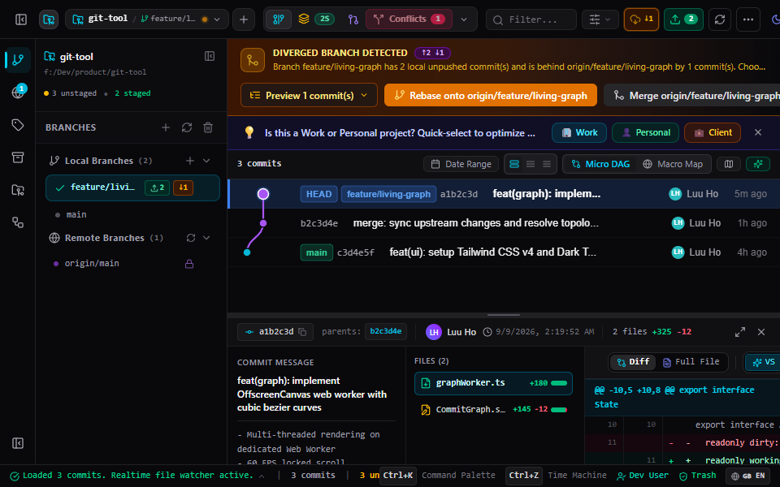

Tạm biệt các ứng dụng Electron ì ạch ngốn cả Gigabyte RAM. FlowGit kết hợp sức mạnh native của Rust và đồ thị 60 FPS cùng cỗ máy thời gian hoàn tác, biến Git thành trải nghiệm không-nỗi-sợ.

Mọi tính năng đều được chế tác để giải quyết nỗi đau lớn nhất của lập trình viên khi làm việc với Git hàng ngày.
Không bao giờ sợ mất code. Mọi đoạn code discard đều được tự động snapshot vào SQLite 48h. Hoàn tác mọi thao tác nguy hiểm (Reset, Rebase hỏng) tức thì chỉ với Ctrl+Z.
Đồ thị động học dựng bằng OffscreenCanvas và Web Worker cách ly hoàn toàn khỏi UI thread. Thuật toán Rayon song song đảm bảo cuộn mượt mà ngay cả với repo kernel.
Đổi thứ tự commit, bôi đen gộp (Squash) chỉ bằng kéo thả. Thuật toán Ghost Preview mô phỏng in-memory cảnh báo conflict trước khi bạn nhả chuột.
Phân tách rõ ràng Ours, Base, Theirs và Result. Nhận từng khối mã trực quan 1-click kết hợp sức mạnh highlight cú pháp của Monaco Editor (chuẩn VS Code).
Duyệt PR, đọc diff Monaco, theo dõi CI/CD Actions, checkout nhánh PR và merge trực tiếp trong app mà không cần mở trình duyệt.
Tự động phân đôi lịch sử commit và dẫn dắt bạn qua giao diện trực quan để truy vết commit gây bug chỉ sau 4 - 5 bước kiểm tra.
Xóa vĩnh viễn file nhạy cảm lỡ commit (.env, API keys, file binary nặng hàng trăm MB) khỏi toàn bộ lịch sử Git chỉ với vài cú nhấp chuột.
Tích hợp công nghệ cập nhật ngầm Tauri v2 ký số bằng mật mã Ed25519, phân phối qua GitHub Releases an toàn tuyệt đối và miễn phí trọn đời.
Không còn phải đoán mò giữa hàng đống dấu <<<<<<< HEAD trong terminal. FlowGit chia tách trực quan nhánh Hiện tại (Ours), nhánh Nhập vào (Theirs) và khung Kết quả cuối cùng với sự hỗ trợ của AI Auto-Merge.

Thao tác Git không còn là nỗi sợ mất code. Mọi tệp hoặc đoạn mã bạn bấm Discard đều được bí mật snapshot vào SQLite cục bộ trong 48 giờ. Bạn có thể xem trước diff và phục hồi tức thì.
Ctrl + Z
| Tiêu Chí | ⚡ FlowGit | Ứng Dụng Electron | Git GUI Cổ Điển |
|---|---|---|---|
| RAM Sử Dụng (Idle) | ~75 MB | 600 MB – 1.2 GB | ~350 MB |
| Thời Gian Mở Ứng Dụng | < 0.5s | 3.5s – 7.0s | 4.0s – 8.0s |
| Động Cơ Đồ Thị (Graph Engine) | OffscreenCanvas + Web Worker | DOM / SVG (Nghẽn UI ở 10k+) | Direct2D / GDI Cũ |
| Cứu Mã Nguồn Discard Nhầm | ✅ Thùng rác SQLite 48h | ❌ Mất vĩnh viễn | ❌ Mất vĩnh viễn |
| Hoàn Tác Time Machine (Ctrl+Z) | ✅ Toàn diện qua git reflog | ⚠️ Hạn chế / Không có | ❌ Không có |
| Mô Phỏng Xung Đột Trước (Dry-Run) | ✅ In-Memory Ghost Preview | ❌ Thử sai trực tiếp | ❌ Thử sai trực tiếp |
| Trình So Sánh Code & Diff | Monaco Editor (Chuẩn VS Code) | Diff Text thông thường | Giao diện cũ |
| Hỗ Trợ Song Ngữ (VI/EN) | ✅ 100% Bản Ngữ Chuẩn Dev | ⚠️ Dịch máy | ❌ Chỉ tiếng Anh |
Tải ngay FlowGit cho Windows hoàn toàn miễn phí hoặc khám phá mã nguồn mở trên GitHub.
Giải thích chi tiết công dụng của từng định dạng tệp và hướng dẫn cài đặt chuẩn xác trong 30 giây cho mọi hệ điều hành.
Trình cài đặt tự động NSIS (~8 MB). Tự tạo shortcut trên Desktop & Start Menu, tích hợp gỡ cài đặt sạch sẽ và hỗ trợ tự động cập nhật ngầm.
Gói Windows Installer chính thống (~10 MB), phù hợp triển khai đồng loạt trong môi trường công ty thông qua Group Policy hoặc Active Directory.
FlowGit_..._x64-setup.exe về và nhấp đúp chuột để mở.Tối ưu native cho toàn bộ máy Mac chạy chip M1, M2, M3, M4 với hiệu năng cao nhất và thời lượng pin tối đa.
Dành cho các dòng máy Mac đời trước chạy vi xử lý Intel Core.
.dmg tải về, kéo biểu tượng FlowGit thả vào thư mục Applications.Gói cài đặt chuẩn cho Ubuntu, Debian, Linux Mint, Pop!_OS. Tích hợp sâu vào App Launcher và menu hệ thống.
Chạy ngay trên mọi bản phân phối Linux mà không cần cài đặt (Arch, Manjaro, Fedora, openSUSE...).
Dành cho Fedora, Red Hat Enterprise Linux (RHEL), openSUSE và CentOS.
sudo dpkg -i FlowGit_*.debchmod +x FlowGit_*.AppImage && ./FlowGit_*.AppImage